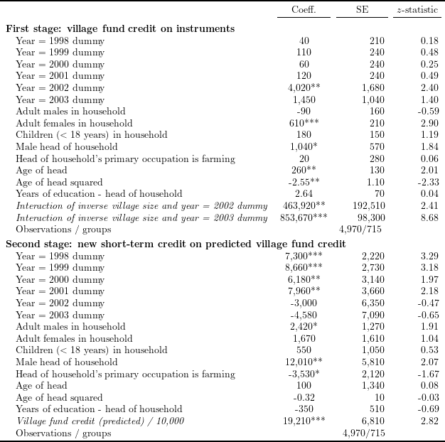

To read the created .tex file, the following \(\LaTeX\) packages are required:
Standard errors from this code are slightly different form the ones in the original table. The reason is that, while R function lfe::felm takes into account the small-sample statistics, Stata function xtivreg2 used for the original table does not if not specified so. If an option small is used for xtivreg2 in Stata, the standard errors will be identical to the ones generated by R lfe::felm function.
# Install and load packages ---------------
packages <- c(
"tidyverse",
"haven",
"lfe",
"stargazer",
"broom",
"kableExtra",
"scales",
"magrittr"
)
pacman::p_load(packages, character.only = TRUE, install = TRUE)
# Load an example dataset ---------------
data_short <- read_dta("Kaboski2012_replication/AEJApp2009-0115_data/documentation/AnnualData_ShortSample.dta")data_table2 <- data_short %>%
group_by(case_id) %>%
mutate(
invHH = ifelse(year == 1, lead(1 / vHH), 1 / vHH),
invHHim = ifelse(year == 6, invHH, NA),
invHHi = mean(invHHim, na.rm = TRUE),
vHHi = 1 / invHHi,
invHHtvf1 = invHHi * (year == 6),
invHHtvf2 = invHHi * (year == 7),
vfst = vfst / 10000,
villageyear = floor(case_id / 1000),
farm = ifelse(
!is.na(och),
ifelse((och > -5) & (och <= 15), 1, 0),
0
),
age2h = ageh^2
) %>%
ungroup() %>%
filter(
year < 8,
vHHi <= 250,
vHHi >= 50
)# IV regression with fixed effects
res_table2 <- felm(
newst ~ as.factor(year) + madult + fadult + kids + maleh + farm + ageh + age2h + educh |
case_id | (vfst ~ invHHtvf1 + invHHtvf2) | villageyear,
data = data_table2
)
# 1st stage result
table2_1st <- summary(res_table2$stage1)$coefficients[, 1:3] %>%
as_tibble() %>%
mutate(
Estimate = Estimate * 10000,
`Cluster s.e.` = `Cluster s.e.` * 10000,
across(
.cols = everything(),
.fns = function(x) ifelse(
abs(x) > 10,
comma_format(accuracy = 1e+1)(x),
comma_format(accuracy = 1e-2)(x)
),
.names = "{col}_format"
),
Estimate_format = ifelse(
abs(`t value`) > 2.58,
paste0(Estimate_format, "***"),
ifelse(
abs(`t value`) > 1.96,
paste0(Estimate_format, "**"),
ifelse(
abs(`t value`) > 1.64,
paste0(Estimate_format, "*"),
Estimate_format
)
)
)
) %>%
select(Estimate_format, `Cluster s.e._format`, `t value_format`)
# 2nd stage result
table2_2nd <- summary(res_table2)$coefficients[, 1:3] %>%
as_tibble() %>%
mutate(
across(
.cols = everything(),
.fns = function(x) ifelse(
abs(x) > 10,
comma_format(accuracy = 1e+1)(x),
comma_format(accuracy = 1e-2)(x)
),
.names = "{col}_format"
),
Estimate_format = ifelse(
abs(`t value`) > 2.58,
paste0(Estimate_format, "***"),
ifelse(
abs(`t value`) > 1.96,
paste0(Estimate_format, "**"),
ifelse(
abs(`t value`) > 1.64,
paste0(Estimate_format, "*"),
Estimate_format
)
)
)
) %>%
select(Estimate_format, `Cluster s.e._format`, `t value_format`)
# control variable labels
cont_label_list <- c(
"Year = 1998 dummy", "Year = 1999 dummy", "Year = 2000 dummy",
"Year = 2001 dummy", "Year = 2002 dummy", "Year = 2003 dummy",
"Adult males in household", "Adult females in household",
"Children ($<$ 18 years) in household", "Male head of household",
"Head of household's primary occupation is farming",
"Age of head", "Age of head squared", "Years of education - head of household"
)
# IV labels
iv_label_list <- c(
"\\textit{Interaction of inverse village size and year = 2002 dummy}",
"\\textit{Interaction of inverse village size and year = 2003 dummy}"
)
# main RHS variable labels
main_rhs_list <- c(
"\\textit{Village fund credit (predicted) / 10,000}"
)
# Observations/groups
table2_obs <- paste0(
comma_format(accuracy = 1e+1)(nrow(model.frame(res_table2))),
"/",
comma_format(accuracy = 1e+0)(
n_distinct(model.frame(res_table2)$case_id) -
sum(table(model.frame(res_table2)$case_id) == 1)
)
)
# combine results
rbind(
cbind(col_names = c(cont_label_list, iv_label_list), table2_1st),
c("Observations / groups", "", table2_obs, ""),
cbind(col_names = c(cont_label_list, main_rhs_list), table2_2nd),
c("Observations / groups", "", table2_obs, "")
) %>%
set_colnames(NULL) %>%
kable("latex", booktabs = TRUE, escape = FALSE, align = c("l", "c", rep("r", 2))) %>%
kable_styling(latex_options = "scale_down") %>%
add_header_above(
c(" ", "Coeff.", "SE", "$z$-statistic"),
escape = FALSE
) %>%
pack_rows(index = c(
"First stage: village fund credit on instruments" =
length(c(cont_label_list, iv_label_list)) + 1,
"Second stage: new short-term credit on predicted village fund credit" =
length(c(cont_label_list, main_rhs_list)) + 1
)) %>%
save_kable("tex/Kaboski2012_table2_replicate.tex")